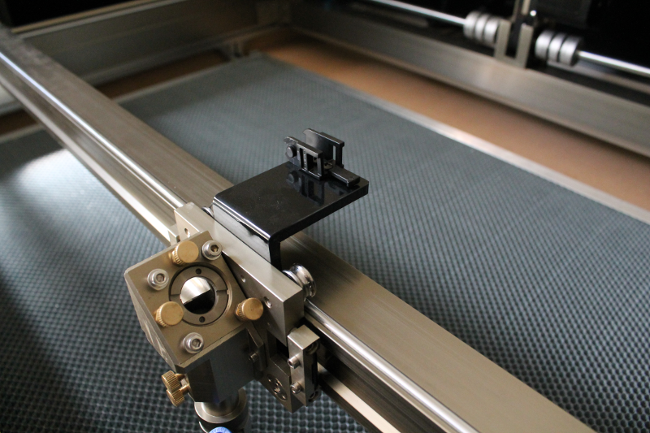

Installing the cable carriers¶
Two cable carriers are used for bringing cables to the moving parts of the XY stage. The larger carrier brings cables to the Y stage, with a second smaller carrier for bringing additional cables to the X-stage.

Two cable carriers are used for bringing cables to the moving parts of the XY stage. The larger carrier brings cables to the Y stage, with a second smaller carrier for bringing additional cables to the X-stage.